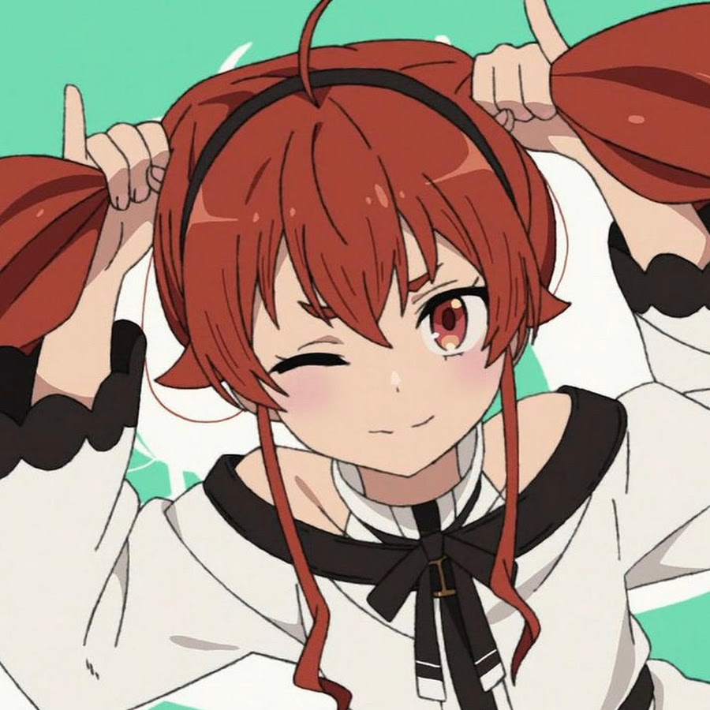

<!DOCTYPE html>
<html lang="en">
<head>
    <meta charset="UTF-8">
    <meta http-equiv="X-UA-Compatible" content="IE=edge">
    <meta name="viewport" content="width=device-width, initial-scale=1.0">
    <title>Document</title>
    <style>
        body {
            display: flex;
            flex-flow: column nowrap;
            justify-content: center;
            align-items: center;
            width: 100vw;
            height: 100vh;
        }
        .element {
            /* 不使用polygon()创建三角形 */
            height: 0;
            width: 0;
            border-left: 50px solid transparent;
            border-right: 50px solid transparent;
            border-bottom: 100px solid blue;
        }
        .element-by-polygon {
            height: 0;
            width: 0;
            clip-path: polygon(50% 0%, 0% 100%, 100% 100%);
        }
        .picture {
            width: 400px;
            transform: rotate(45deg);
            /* 这里旋转了里面的子元素也会跟着旋转 */

            /* 隐藏溢出的部分 */
            overflow: hidden;
        }
        .picture > img {
            max-width: 100%;
            /* 抵消父盒子旋转带来的偏移 */
            transform: rotate(-45deg);
            /* 如果图片小了可以使用缩放scale函数 */
        }

        /* 使用clip-path实现裁剪效果 */
        .clip {
            width: 100px;
            height: 100px;
            clip-path: polygon(0 50%, 50% 0, 100% 50%,50% 100%);
            /* 这个动画效果贼好看 */
            transition: 1s clip-path;
        }
        .clip:hover {
            clip-path: polygon(0 0, 100% 0, 100% 100%, 0 100%);
        }
    </style>
</head>
<body>
    <!-- <div class="picture">
        
    </div> -->
    <!-- <div class="element"></div> -->
    <!-- <div class="element-by-polygon"></div> -->
    
</body>
</html>